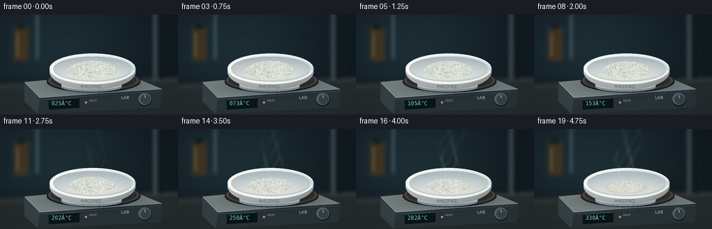
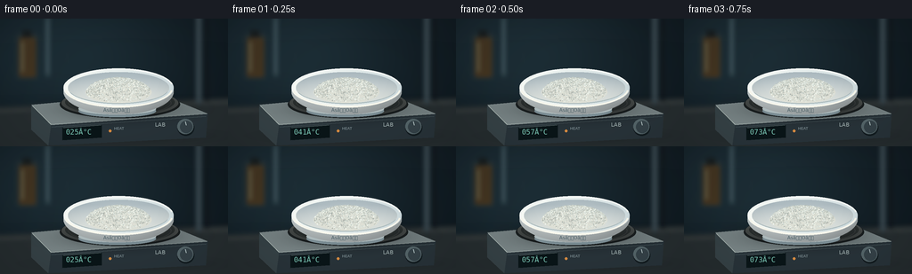

CODING AGENTS AS PIXEL WORLD MODELS
traex/GPT-6.1-Sol · phygen_120
点击播放 · 原生 RGB 像素
逐轮保存的候选
回放视频、检查图与代码变化。
每份候选均可单独播放。实际图片检查记录在下方工具轨迹中。
候选 01播放与检查图
点击播放 · 原生 RGB 像素


展开代码变化
--- 上一保存版本
+++ 本次保存版本
@@ -0,0 +1,195 @@
+"""Procedural RGB laboratory timelapse; only NumPy, PIL and geometry."""
+from pathlib import Path
+import math
+import numpy as np
+from PIL import Image, ImageDraw, ImageFont, ImageFilter
+import artifact_io
+
+ROOT=Path(__file__).resolve().parent
+W,H,S=256,144,3
+WW,HH=W*S,H*S
+rng=np.random.default_rng(120)
+Y,X=np.mgrid[0:HH,0:WW].astype(float); X/=S; Y/=S
+font='/usr/share/fonts/truetype/dejavu/DejaVuSans.ttf'
+mono='/usr/share/fonts/truetype/dejavu/DejaVuSansMono.ttf'
+
+def fnt(size,mon=False): return ImageFont.truetype(mono if mon else font,int(size*S))
+def ellipse(d,b,fill,outline=None,width=1):
+ d.ellipse(tuple(int(a*S) for a in b),fill=fill,outline=outline,width=max(1,int(width*S)))
+def poly(d,pts,fill): d.polygon([(int(x*S),int(y*S)) for x,y in pts],fill=fill)
+def line(d,pts,fill,width=1): d.line([(int(x*S),int(y*S)) for x,y in pts],fill=fill,width=max(1,int(width*S)))
+def layer(im,col,alpha):
+ a=np.clip(alpha,0,1)[...,None]
+ arr=np.asarray(im).astype(float)
+ c=np.asarray(col)
+ return Image.fromarray(np.clip(arr*(1-a)+c*a,0,255).astype('uint8'))
+
+# Static photographic backdrop: matte worktop, soft glassware, fume-hood recess.
+noise=rng.normal(0,.65,(HH,WW))
+light=np.exp(-((X-75)/140)**2-((Y-44)/90)**2)
+back=np.stack([15+15*light,24+23*light,30+25*light],axis=-1)+noise[...,None]
+base=Image.fromarray(np.uint8(np.clip(back,0,255)))
+d=ImageDraw.Draw(base)
+# Out of focus laboratory hardware, deliberately subordinate to the sample.
+poly(d,[(0,99),(256,89),(256,144),(0,144)],(41,48,50))
+poly(d,[(0,103),(256,93),(256,95),(0,105)],(66,72,71))
+poly(d,[(220,0),(226,0),(226,96),(220,96)],(59,74,81))
+poly(d,[(231,0),(234,0),(234,93),(231,93)],(18,24,28))
+d.rounded_rectangle((18*S,16*S,43*S,68*S),radius=4*S,fill=(36,49,53))
+d.rounded_rectangle((21*S,21*S,40*S,66*S),radius=3*S,fill=(69,54,34))
+poly(d,[(24,26),(26,26),(26,59),(24,61)],(111,107,82))
+poly(d,[(25,13),(35,13),(35,21),(25,21)],(25,30,31))
+poly(d,[(51,0),(56,0),(56,65),(51,65)],(49,68,75))
+line(d,[(53,2),(53,61)],(99,123,134),1)
+base=base.filter(ImageFilter.GaussianBlur(2.4*S))
+# Desk grain, perspective reflected light.
+base=layer(base,[100,98,87],.055*np.exp(-((X-133)/95)**2-((Y-113)/16)**2))
+base=layer(base,[8,12,15],.23*np.exp(-((X-142)/86)**2-((Y-132)/8)**2))
+
+# Random geometric grains sampled once; same physical sample across all frames.
+grains=[]
+for k in range(2000):
+ r=math.sqrt(rng.random()); theta=rng.uniform(0,2*math.pi)
+ gx=36*r*math.cos(theta); gz=25*r*math.sin(theta)
+ size=rng.uniform(.23,1.05)*(1.3 if rng.random()<.16 else 1)
+ grains.append((gx,gz,size,rng.uniform(0,6.28),rng.uniform(.12,.98),rng.uniform(.85,1.12)))
+grains.sort(key=lambda v:v[1])
+
+# Helpers for an elliptical porcelain bowl rendered with smooth material shading.
+def dish(im):
+ # Shadow on the metal heating surface.
+ im=layer(im,[6,9,11],.5*np.exp(-((X-136)/61)**2-((Y-101)/13)**2))
+ # Lower foot / broad curved outer wall.
+ wall=((X-133)/62)**2+((Y-82)/26)**2
+ outer=(wall<=1)&(Y>=79)
+ wallcol=np.zeros((HH,WW,3))
+ shade=np.clip(.90-.24*((X-111)/95)**2-.18*((Y-83)/24),.48,1)
+ for c,v in enumerate((220,229,230)): wallcol[...,c]=v*shade
+ im=layer(im,wallcol,outer.astype(float))
+ d=ImageDraw.Draw(im)
+ ellipse(d,(88,97,175,111),(124,142,149))
+ ellipse(d,(88,95,175,108),(175,188,190))
+ # Front shell and bowl opening have distinct glazed profiles.
+ im=layer(im,wallcol,outer.astype(float))
+ q=((X-133)/62)**2+((Y-78)/22)**2
+ ceramic=np.stack([231-21*(X-133)/62,239-16*(X-133)/62,238-12*(X-133)/62],-1)
+ im=layer(im,ceramic,(q<=1).astype(float))
+ inner=((X-133)/57)**2+((Y-78)/18)**2
+ # Interior cup: steep curved wall, cool reflected light and a warm lit floor.
+ edge=np.clip(inner,0,1)
+ illum=np.clip((Y-66)/23,0,1)
+ bowl=np.stack([185+44*illum-14*edge,197+36*illum-12*edge,201+27*illum-10*edge],-1)
+ im=layer(im,bowl,(inner<1).astype(float))
+ d=ImageDraw.Draw(im)
+ # Rim glints. Back edge and front edge follow actual elliptical geometry.
+ d.arc((71*S,56*S,195*S,100*S),187,348,fill=(244,248,245),width=2*S)
+ d.arc((72*S,56*S,194*S,100*S),8,171,fill=(252,251,240),width=2*S)
+ d.arc((76*S,60*S,190*S,96*S),15,163,fill=(170,187,190),width=1*S)
+ d.text((116*S,100*S),'AsâOâ',font=fnt(5.6),fill=(69,91,98))
+ return im
+
+
+def render(i):
+ t=i/19
+ temp=25+305*t
+ im=base.copy(); d=ImageDraw.Draw(im)
+ # Brushed-metal hot plate, rigid perspective geometry.
+ poly(d,[(35,97),(177,84),(233,107),(231,134),(54,143),(35,125)],(20,27,32))
+ poly(d,[(35,97),(177,84),(233,107),(57,120)],(127,139,140))
+ poly(d,[(57,120),(233,107),(231,134),(54,143)],(42,53,59))
+ poly(d,[(35,97),(57,120),(54,143),(35,125)],(56,68,72))
+ line(d,[(36,98),(57,119),(232,107)],(177,189,184),.7)
+ line(d,[(58,122),(231,110)],(84,101,105),.7)
+ # Circular heater, dark iron with faint heat reflection (not flame).
+ ellipse(d,(67,81,202,112),(28,33,34))
+ ellipse(d,(69,80,200,110),(75,79,77))
+ ellipse(d,(73,80,196,108),(47,52,51))
+ for r in range(4):
+ ellipse(d,(77+r*7,82+r*2,192-r*7,108-r*2),None,(89-r*6,91-r*6,86-r*5),.45)
+ warm=max(0,(t-.43)/.57)
+ im=layer(im,[207,97,39],.16*warm*np.exp(-((X-134)/64)**2-((Y-98)/10)**2))
+ im=dish(im)
+ # A translucent vitreous residue forms after the temperature reaches melting.
+ melt=np.clip((temp-295)/35,0,1)
+ if melt>0:
+ pool=((X-132)/31)**2+((Y-84)/9)**2
+ im=layer(im,[193,196,179],.48*melt*(pool<1))
+ im=layer(im,[248,249,232],.34*melt*np.exp(-((X-122)/19)**2-((Y-85)/3)**2)*(pool<1))
+ d=ImageDraw.Draw(im)
+ d.arc((101*S,75*S,163*S,93*S),20,165,fill=(208,214,199),width=S)
+ d.arc((106*S,76*S,159*S,91*S),196,283,fill=(244,244,226),width=S)
+ # White solid never burns, darkens or becomes metallic. Heating causes
+ # sublimation first, followed by a small softened/glassy remaining mass.
+ loss=.10*t+.61*(np.clip((t-.34)/.66,0,1)**1.25)
+ radius=1-.30*loss-.13*melt
+ height=14*(1-.80*loss)*(1-.69*melt)
+ rx,rz=37*radius,26*radius
+ # Main chalky granular mound analytic silhouette / surface.
+ z=(Y-83)/.49
+ mound=np.maximum(0,1-((X-133)/rx)**2-(z/rz)**2)
+ # Render mound surface as densely overlapping physical faceted micrograins.
+ d=ImageDraw.Draw(im)
+ # A soft irregular white footprint prevents holes between grains.
+ ellipse(d,(133-rx,83-rz*.47,133+rx,83+rz*.47),(223,225,215))
+ # Pile particles are projected in depth order. Its height gently decreases.
+ for gx,gz,size,ang,fade,brightness in grains:
+ if fade<loss*.80: continue
+ x=gx*radius; z=gz*radius
+ rr=(gx/36)**2+(gz/25)**2
+ gy=height*max(0,1-rr)**.62
+ sx=133+x; sy=83+z*.47-gy*.86
+ a=size*(1-.4*melt)*(1-.14*loss)
+ if a<.15: continue
+ # Irregular six-sided particles with three illuminated crystal faces.
+ corners=[]
+ for j in range(5):
+ theta=ang+j*2*math.pi/5
+ corners.append((sx+a*math.cos(theta),sy+.63*a*math.sin(theta)))
+ tip=(sx-.18*a,sy-.85*a)
+ b=brightness*(1+.035*math.cos(ang))
+ shades=[(250,250,239),(212,217,207),(229,233,220),(242,243,232),(196,206,200)]
+ for j in range(5):
+ col=tuple(int(np.clip(v*b,0,255)) for v in shades[j])
+ poly(d,[corners[j],corners[(j+1)%5],tip],col)
+ # Late residual chalk becomes thinner / more transparent, not a solid change of color.
+ if melt>0:
+ # Front meniscus highlight that partly obscures tiny crystals.
+ im=layer(im,[233,232,210],melt*.17*np.exp(-((X-133)/26)**2-((Y-85)/5)**2))
+ # White sublimation vapor. Continuous rising thin wisps, not dark smoke.
+ strength=np.clip((temp-160)/140,0,1)
+ if strength>0:
+ v=np.zeros((HH,WW))
+ source_y=79-height*.65
+ for j in range(5):
+ up=source_y-Y
+ phase=t*7+j*1.7
+ center=130+(j-2)*6 + 5*np.sin(up*.11+phase)+.12*up
+ spread=1.3+up*.039
+ axial=np.exp(-up/43)*np.clip(up/7,0,1)*(up>0)
+ curls=.38+.62*(.5+.5*np.sin(up*.21-phase*1.8+j))
+ v+=np.exp(-((X-center)/np.maximum(spread,1))**2)*axial*curls
+ alpha=np.clip(v*.17*strength,0,.30)
+ # vapor is lit from upper left and becomes nearly invisible higher up
+ im=layer(im,[204,219,221],alpha)
+ d=ImageDraw.Draw(im)
+ # Display belongs to the instrument, showing gradual temperature increase.
+ poly(d,[(70,123),(114,120),(114,134),(70,137)],(10,21,24))
+ line(d,[(71,123),(113,120)],(113,131,130),.5)
+ d.text((74*S,123*S),f'{int(round(temp)):03d}°C',font=fnt(8,True),fill=(131,211,192))
+ ellipse(d,(122,125,125,128),(221,143,66))
+ d.text((128*S,121*S),'HEAT',font=fnt(4.5),fill=(148,166,171))
+ d.text((174*S,116*S),'LAB',font=fnt(6.2),fill=(165,180,179))
+ # Brushed rotary adjustment dial and its highlight.
+ ellipse(d,(199,114,218,132),(19,28,32))
+ ellipse(d,(199,113,217,130),(87,103,107))
+ ellipse(d,(202,115,216,129),(54,67,73))
+ line(d,[(208,116),(209,120)],(190,206,206),1)
+ # Lens vignette and extremely subtle fixed sensor texture.
+ vig=np.clip(((X-129)/169)**2+((Y-73)/120)**2,0,1)*.19
+ im=layer(im,[5,10,14],vig)
+ return np.asarray(im.resize((W,H),Image.Resampling.LANCZOS),dtype=np.uint8)
+
+if __name__=='__main__':
+ frames=np.stack([render(i) for i in range(20)])
+ artifact_io.save(frames,ROOT)
+ print('Saved 20 RGB frames, 256 Ã 144, 4 fps.')
候选 02播放与检查图
点击播放 · 原生 RGB 像素

展开代码变化
--- 上一保存版本
+++ 本次保存版本
@@ -85,7 +85,7 @@
d.arc((71*S,56*S,195*S,100*S),187,348,fill=(244,248,245),width=2*S)
d.arc((72*S,56*S,194*S,100*S),8,171,fill=(252,251,240),width=2*S)
d.arc((76*S,60*S,190*S,96*S),15,163,fill=(170,187,190),width=1*S)
- d.text((116*S,100*S),'AsâOâ',font=fnt(5.6),fill=(69,91,98))
+ d.text((116*S,100*S),'As\u2082O\u2083',font=fnt(5.6),fill=(69,91,98))
return im
@@ -175,7 +175,7 @@
# Display belongs to the instrument, showing gradual temperature increase.
poly(d,[(70,123),(114,120),(114,134),(70,137)],(10,21,24))
line(d,[(71,123),(113,120)],(113,131,130),.5)
- d.text((74*S,123*S),f'{int(round(temp)):03d}°C',font=fnt(8,True),fill=(131,211,192))
+ d.text((74*S,123*S),f'{int(round(temp)):03d}\u00b0C',font=fnt(8,True),fill=(131,211,192))
ellipse(d,(122,125,125,128),(221,143,66))
d.text((128*S,121*S),'HEAT',font=fnt(4.5),fill=(148,166,171))
d.text((174*S,116*S),'LAB',font=fnt(6.2),fill=(165,180,179))
@@ -192,4 +192,4 @@
if __name__=='__main__':
frames=np.stack([render(i) for i in range(20)])
artifact_io.save(frames,ROOT)
- print('Saved 20 RGB frames, 256 Ã 144, 4 fps.')
+ print('Saved 20 RGB frames, 256 x 144, 4 fps.')
候选 03播放与检查图
可观测工具轨迹
实际执行的命令与返回图片。
命令 1exit 0
/bin/bash -lc 'ls -la && cat prompt.txt && cat GENERATION_RULES.md && cat task_spec.json'
命令 2exit 0
/bin/bash -lc 'cat artifact_io.py && fc-list | head'
命令 3exit 0
/bin/bash -lc "cat > generate.py <<'PY'
\"\"\"Procedural RGB laboratory timelapse; only NumPy, PIL and geometry.\"\"\"
from pathlib import Path
import math
import numpy as np
from PIL import Image, ImageDraw, ImageFont, ImageFilter
import artifact_io
ROOT=Path(__file__).resolve().parent
W,H,S=256,144,3
WW,HH=W*S,H*S
rng=np.random.default_rng(120)
Y,X=np.mgrid[0:HH,0:WW].astype(float); X/=S; Y/=S
font='/usr/share/fonts/truetype/dejavu/DejaVuSans.ttf'
mono='/usr/share/fonts/truetype/dejavu/DejaVuSansMono.ttf'
def fnt(size,mon=False): return ImageFont.truetype(mono if mon else font,int(size*S))
def ellipse(d,b,fill,outline=None,width=1):
d.ellipse(tuple(int(a*S) for a in b),fill=fill,outline=outline,width=max(1,int(width*S)))
def poly(d,pts,fill): d.polygon([(int(x*S),int(y*S)) for x,y in pts],fill=fill)
def line(d,pts,fill,width=1): d.line([(int(x*S),int(y*S)) for x,y in pts],fill=fill,width=max(1,int(width*S)))
def layer(im,col,alpha):
a=np.clip(alpha,0,1)[...,None]
arr=np.asarray(im).astype(float)
c=np.asarray(col)
return Image.fromarray(np.clip(arr*(1-a)+c*a,0,255).astype('uint8'))
# Static photographic backdrop: matte worktop, soft glassware, fume-hood recess.
noise=rng.normal(0,.65,(HH,WW))
light=np.exp(-((X-75)/140)**2-((Y-44)/90)**2)
back=np.stack([15+15*light,24+23*light,30+25*light],axis=-1)+noise[...,None]
base=Image.fromarray(np.uint8(np.clip(back,0,255)))
d=ImageDraw.Draw(base)
# Out of focus laboratory hardware, deliberately subordinate to the sample.
poly(d,[(0,99),(256,89),(256,144),(0,144)],(41,48,50))
poly(d,[(0,103),(256,93),(256,95),(0,105)],(66,72,71))
poly(d,[(220,0),(226,0),(226,96),(220,96)],(59,74,81))
poly(d,[(231,0),(234,0),(234,93),(231,93)],(18,24,28))
d.rounded_rectangle((18*S,16*S,43*S,68*S),radius=4*S,fill=(36,49,53))
d.rounded_rectangle((21*S,21*S,40*S,66*S),radius=3*S,fill=(69,54,34))
poly(d,[(24,26),(26,26),(26,59),(24,61)],(111,107,82))
poly(d,[(25,13),(35,13),(35,21),(25,21)],(25,30,31))
poly(d,[(51,0),(56,0),(56,65),(51,65)],(49,68,75))
line(d,[(53,2),(53,61)],(99,123,134),1)
base=base.filter(ImageFilter.GaussianBlur(2.4*S))
# Desk grain, perspective reflected light.
base=layer(base,[100,98,87],.055*np.exp(-((X-133)/95)**2-((Y-113)/16)**2))
base=layer(base,[8,12,15],.23*np.exp(-((X-142)/86)**2-((Y-132)/8)**2))
# Random geometric grains sampled once; same physical sample across all frames.
grains=[]
for k in range(2000):
r=math.sqrt(rng.random()); theta=rng.uniform(0,2*math.pi)
gx=36*r*math.cos(theta); gz=25*r*math.sin(theta)
size=rng.uniform(.23,1.05)*(1.3 if rng.random()<.16 else 1)
grains.append((gx,gz,size,rng.uniform(0,6.28),rng.uniform(.12,.98),rng.uniform(.85,1.12)))
grains.sort(key=lambda v:v[1])
# Helpers for an elliptical porcelain bowl rendered with smooth material shading.
def dish(im):
# Shadow on the metal heating surface.
im=layer(im,[6,9,11],.5*np.exp(-((X-136)/61)**2-((Y-101)/13)**2))
# Lower foot / broad curved outer wall.
wall=((X-133)/62)**2+((Y-82)/26)**2
outer=(wall<=1)&(Y>=79)
wallcol=np.zeros((HH,WW,3))
shade=np.clip(.90-.24*((X-111)/95)**2-.18*((Y-83)/24),.48,1)
for c,v in enumerate((220,229,230)): wallcol[...,c]=v*shade
im=layer(im,wallcol,outer.astype(float))
d=ImageDraw.Draw(im)
ellipse(d,(88,97,175,111),(124,142,149))
ellipse(d,(88,95,175,108),(175,188,190))
# Front shell and bowl opening have distinct glazed profiles.
im=layer(im,wallcol,outer.astype(float))
q=((X-133)/62)**2+((Y-78)/22)**2
ceramic=np.stack([231-21*(X-133)/62,239-16*(X-133)/62,238-12*(X-133)/62],-1)
im=layer(im,ceramic,(q<=1).astype(float))
inner=((X-133)/57)**2+((Y-78)/18)**2
# Interior cup: steep curved wall, cool reflected light and a warm lit floor.
edge=np.clip(inner,0,1)
illum=np.clip((Y-66)/23,0,1)
bowl=np.stack([185+44*illum-14*edge,197+36*illum-12*edge,201+27*illum-10*edge],-1)
im=layer(im,bowl,(inner<1).astype(float))
d=ImageDraw.Draw(im)
# Rim glints. Back edge and front edge follow actual elliptical geometry.
d.arc((71*S,56*S,195*S,100*S),187,348,fill=(244,248,245),width=2*S)
d.arc((72*S,56*S,194*S,100*S),8,171,fill=(252,251,240),width=2*S)
d.arc((76*S,60*S,190*S,96*S),15,163,fill=(170,187,190),width=1*S)
d.text((116*S,100*S),'AsâOâ',font=fnt(5.6),fill=(69,91,98))
return im
def render(i):
t=i/19
temp=25+305*t
im=base.copy(); d=ImageDraw.Draw(im)
# Brushed-metal hot plate, rigid perspective geometry.
poly(d,[(35,97),(177,84),(233,107),(231,134),(54,143),(35,125)],(20,27,32))
poly(d,[(35,97),(177,84),(233,107),(57,120)],(127,139,140))
poly(d,[(57,120),(233,107),(231,134),(54,143)],(42,53,59))
poly(d,[(35,97),(57,120),(54,143),(35,125)],(56,68,72))
line(d,[(36,98),(57,119),(232,107)],(177,189,184),.7)
line(d,[(58,122),(231,110)],(84,101,105),.7)
# Circular heater, dark iron with faint heat reflection (not flame).
ellipse(d,(67,81,202,112),(28,33,34))
ellipse(d,(69,80,200,110),(75,79,77))
ellipse(d,(73,80,196,108),(47,52,51))
for r in range(4):
ellipse(d,(77+r*7,82+r*2,192-r*7,108-r*2),None,(89-r*6,91-r*6,86-r*5),.45)
warm=max(0,(t-.43)/.57)
im=layer(im,[207,97,39],.16*warm*np.exp(-((X-134)/64)**2-((Y-98)/10)**2))
im=dish(im)
# A translucent vitreous residue forms after the temperature reaches melting.
melt=np.clip((temp-295)/35,0,1)
if melt>0:
pool=((X-132)/31)**2+((Y-84)/9)**2
im=layer(im,[193,196,179],.48*melt*(pool<1))
im=layer(im,[248,249,232],.34*melt*np.exp(-((X-122)/19)**2-((Y-85)/3)**2)*(pool<1))
d=ImageDraw.Draw(im)
d.arc((101*S,75*S,163*S,93*S),20,165,fill=(208,214,199),width=S)
d.arc((106*S,76*S,159*S,91*S),196,283,fill=(244,244,226),width=S)
# White solid never burns, darkens or becomes metallic. Heating causes
# sublimation first, followed by a small softened/glassy remaining mass.
loss=.10*t+.61*(np.clip((t-.34)/.66,0,1)**1.25)
radius=1-.30*loss-.13*melt
height=14*(1-.80*loss)*(1-.69*melt)
rx,rz=37*radius,26*radius
# Main chalky granular mound analytic silhouette / surface.
z=(Y-83)/.49
mound=np.maximum(0,1-((X-133)/rx)**2-(z/rz)**2)
# Render mound surface as densely overlapping physical faceted micrograins.
d=ImageDraw.Draw(im)
# A soft irregular white footprint prevents holes between grains.
ellipse(d,(133-rx,83-rz*.47,133+rx,83+rz*.47),(223,225,215))
# Pile particles are projected in depth order. Its height gently decreases.
for gx,gz,size,ang,fade,brightness in grains:
if fade<loss*.80: continue
x=gx*radius; z=gz*radius
rr=(gx/36)**2+(gz/25)**2
gy=height*max(0,1-rr)**.62
sx=133+x; sy=83+z*.47-gy*.86
a=size*(1-.4*melt)*(1-.14*loss)
if a<.15: continue
# Irregular six-sided particles with three illuminated crystal faces.
corners=[]
for j in range(5):
theta=ang+j*2*math.pi/5
corners.append((sx+a*math.cos(theta),sy+.63*a*math.sin(theta)))
tip=(sx-.18*a,sy-.85*a)
b=brightness*(1+.035*math.cos(ang))
shades=[(250,250,239),(212,217,207),(229,233,220),(242,243,232),(196,206,200)]
for j in range(5):
col=tuple(int(np.clip(v*b,0,255)) for v in shades[j])
poly(d,[corners[j],corners[(j+1)%5],tip],col)
# Late residual chalk becomes thinner / more transparent, not a solid change of color.
if melt>0:
# Front meniscus highlight that partly obscures tiny crystals.
im=layer(im,[233,232,210],melt*.17*np.exp(-((X-133)/26)**2-((Y-85)/5)**2))
# White sublimation vapor. Continuous rising thin wisps, not dark smoke.
strength=np.clip((temp-160)/140,0,1)
if strength>0:
v=np.zeros((HH,WW))
source_y=79-height*.65
for j in range(5):
up=source_y-Y
phase=t*7+j*1.7
center=130+(j-2)*6 + 5*np.sin(up*.11+phase)+.12*up
spread=1.3+up*.039
axial=np.exp(-up/43)*np.clip(up/7,0,1)*(up>0)
curls=.38+.62*(.5+.5*np.sin(up*.21-phase*1.8+j))
v+=np.exp(-((X-center)/np.maximum(spread,1))**2)*axial*curls
alpha=np.clip(v*.17*strength,0,.30)
# vapor is lit from upper left and becomes nearly invisible higher up
im=layer(im,[204,219,221],alpha)
d=ImageDraw.Draw(im)
# Display belongs to the instrument, showing gradual temperature increase.
poly(d,[(70,123),(114,120),(114,134),(70,137)],(10,21,24))
line(d,[(71,123),(113,120)],(113,131,130),.5)
d.text((74*S,123*S),f'{int(round(temp)):03d}°C',font=fnt(8,True),fill=(131,211,192))
ellipse(d,(122,125,125,128),(221,143,66))
d.text((128*S,121*S),'HEAT',font=fnt(4.5),fill=(148,166,171))
d.text((174*S,116*S),'LAB',font=fnt(6.2),fill=(165,180,179))
# Brushed rotary adjustment dial and its highlight.
ellipse(d,(199,114,218,132),(19,28,32))
ellipse(d,(199,113,217,130),(87,103,107))
ellipse(d,(202,115,216,129),(54,67,73))
line(d,[(208,116),(209,120)],(190,206,206),1)
# Lens vignette and extremely subtle fixed sensor texture.
vig=np.clip(((X-129)/169)**2+((Y-73)/120)**2,0,1)*.19
im=layer(im,[5,10,14],vig)
return np.asarray(im.resize((W,H),Image.Resampling.LANCZOS),dtype=np.uint8)
if __name__=='__main__':
frames=np.stack([render(i) for i in range(20)])
artifact_io.save(frames,ROOT)
print('Saved 20 RGB frames, 256 Ã 144, 4 fps.')
PY
python generate.py"命令 4exit 0
/bin/bash -lc "grep -n 'As\\|03d\\|Saved' generate.py"
命令 5exit 0
/bin/bash -lc "python - <<'PY'
p='generate.py'
s=open(p).read().replace(\"'Asâ\\x82\\x82Oâ\\x82\\x83'\", \"'As\\\\u2082O\\\\u2083'\").replace(\"ðC\", \"\\\\u00b0C\").replace('256 Ã\\x97 144','256 x 144')
open(p,'w').write(s)
PY
python generate.py
ls -lh pixels.npz index.html inspection.png"命令 6exit 0
/bin/bash -lc "python - <<'PY'
p='generate.py'
a=open(p).readlines()
for i,l in enumerate(a):
if 'd.text((116*S,100*S)' in l:a[i]=\" d.text((116*S,100*S),'As\\\\u2082O\\\\u2083',font=fnt(5.6),fill=(69,91,98))\\n\"
if 'int(round(temp)):03d' in l:a[i]=\" d.text((74*S,123*S),f'{int(round(temp)):03d}\\\\u00b0C',font=fnt(8,True),fill=(131,211,192))\\n\"
if \"print('Saved\" in l:a[i]=\" print('Saved 20 RGB frames, 256 x 144, 4 fps.')\\n\"
open(p,'w').writelines(a)
PY
python generate.py"视觉工具实际返回图片 1

保存候选 3 份；完成命令 6 次；可验证图片返回 1 张。原始 API 响应与完整日志保留在本地。